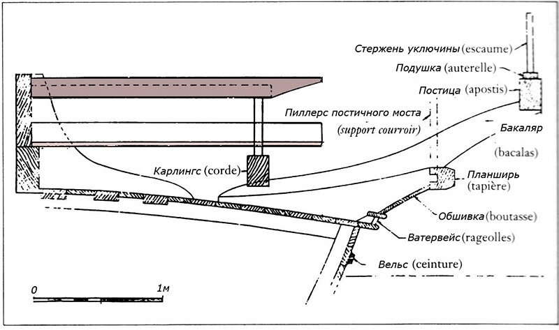

Отвлеклись немного, обсудили некоторые эпизоды морской истории, связанные с галерами, ну а сейчас возвратимся к нашим незаконченным темам. Последняя из них – Системы гребли. Мы сделали обзор всех стилей гребли на галерах, отдельно обсудили Античный стиль и стиль alla sensile , а сейчас наступило время перейти к системе гребли, которая стала завершающей в череде сменяющих друг друга способов работы гребцов на военных галерах – к стилю a scaloccio.
Материала по этому стилю гребли несравненно больше, чем по первым двум, однако его изучение связано с некоторыми терминологическими трудностями, суть которых я поясню в ходе дальнейшего изложения. Для лучшего понимания стоит, по-моему, сначала разобраться с рабочим местом гребца на галерах a scaloccio, чтобы картинка эта была перед глазами, когда будем описывать работу гребцов.

Когда мы встречаем в работах, посвященных галерам, фразу наподобие “Гребцы работали, ели и спали на банках», мы должны четко понимать, что речь идет не о тех банках-скамьях, на которых они сидят при гребле, а на банках в широком смысле этого термина. Банка-скамья представляет собой балку, хотя и достаточно широкую (16 см), но как мы понимаем пять-семь человек спать на ней едва ли смогут. Можно представить себе брус, из которого сейчас собирают многие дачные дома, и вообразить, что на нем проводят ночь пятеро здоровых мужчин. Так что же представлет собой банка в широком понимании этого слова.
Состоит она из четырех частей:
(1) Собственно банка, о которой мы уже говорили (сосновый брус 7 футов (2,28 м) длины 6 дюймов (16 см) ширины и 5 дюймов (14 см) толщины (я думаю, не надо пояснять, что речь идет о старых единицах измерения Прованса – футах (pieds) и дюймах( pouces); при переводе в метрические меры идет округление до 1 см); кромки ее скруглены, а внизу было сделано углубление для облегчения веса, а также потому, что на галере не должно быть неиспользованного места: в этом углублении хранились мушкеты. Гребцы не сидели на голой древесине. Из старой ветоши формировалось некоторое подобие подушки, к которой пришивали кусок кожи, образующей фартук, предохраняющий ноги гребца от водяных брызг.
(2) Широкая деревянная платформа, на галерном языке она называлась banquette.
Здесь мы встречаемся с первым из множества лингвистических затруднений. Суть его в следующем. Как мы уже говорили, язык на галерах Средиземного моря, в том числе и на французских галерах, в корне отличался от морского языка каждой из стран. Это был международный галерный жаргон, ближе всего к венецианского диалекту итальянского языка, но содержавший также и много других терминов, происхождение которых определить не просто. К счастью, этот язык в большей своей части дошел до нас и не представляет труда, немного попотев, разобраться в нем. Русский же галерный язык по большей своей части утрачен. Поэтому переводить галерные термины на наш язык очень сложно: переводить их морскими терминами парусного флота – теряется своеобразие терминологии; переводить описательно – вообще получается какой-то справочник, а не рассказ о галерах. Поэтому перевод этот будет делаться творчески: где возможно, используются сохранившиеся галерные термины; где этого сделать нельзя – изобретаются термины, с большой долей вероятности подходящие для утраченных номинаций. Иногда придется переводить описательно, никуда от этого, к сожалению, не деться.
Итак, деревянная платформа banquette. Термина для нее не нашлось. В литературе переводят этот термин описательно: «широкая доска, на которую опираются гребцы». Я бы не мудрствовал здесь , а перевел так, как это напрашивается: банкет. Тем более, что в морском языке парусного флота есть такой термин. Банкет - это решётчатая (для стока воды) площадка на низких ножках, закрепленная на палубе. Предназначена для хранения бухт тросов или кранцев. На кораблях старой постройки деревянные банкеты вокруг палубных орудий, а также нактоузов, компасов, служили для удобства обслуживания этих боевых и технических средств в условиях заливаемости палубы водой. Есть термин банкет и в языке фортификационных сооружений: он означает небольшое возвышение, ступень у бруствера. «Прошу указу, чтоб на стѣнах зубцам вышины убавить и з банкета чрез стѣну стрѣлять» - это из бумаг Петра Великого. Поэтому и мы будет называть эту часть банки банкетом. Он тоже был приподнят над палубой галеры, как видно из следующего поперечного сечения. (За основу первого и второго рисунков взяты проработки Рене Бурле).

Банкет изготавливали из ели, длина его равнялась длине банки, ширина 17 дюймов (46 см), толщина 5 см. Он возвышался над палубой примерно на полметра.
(3) Вдоль кромки банкета шел сосновый бортик, подножка (pedagne), высотой 14 см и толщиной 8 см. За этим бортиком не было уже опоры для ног, внизу находилась палуба галеры. При гребле гребцы должны были делать выпад примерно 50 см длины, чтобы опереться на следующую составную часть банки:
(4) Упор, сосновый брус 6 футов (1,96 м) длины, 4 дюйма (10,8 см) ширины и 2 дюйма толщины; упор (contre pedagne) был прикреплен к носовой части банки.
Как на такой банке работали гребцы и какие при этом возникали проблемы обсудим в следующий раз.